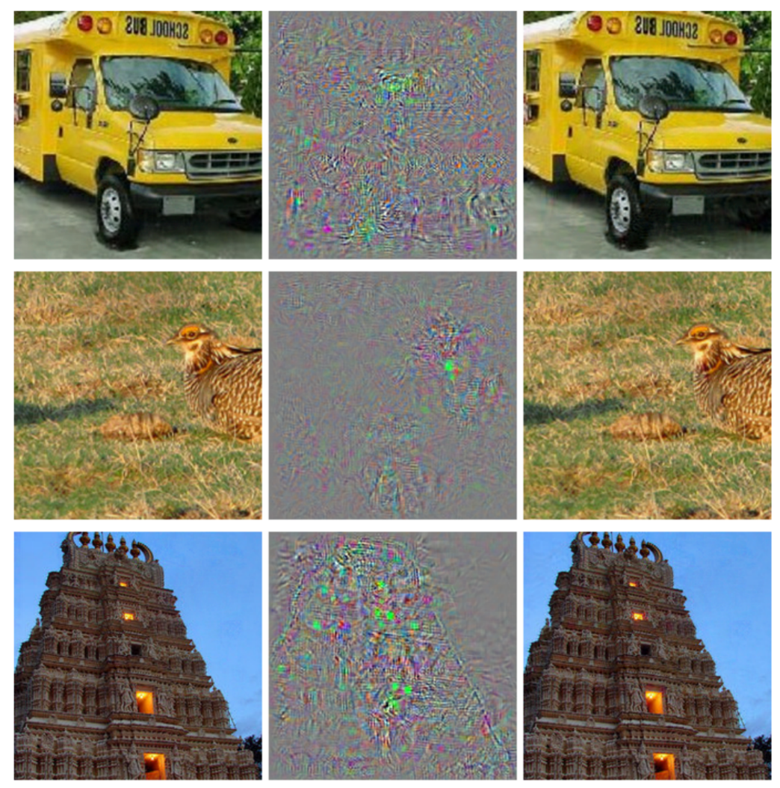

Code
Main Project RepoA moderate portion of the code in this research is reused or modified from [1], which has its own repo here, and my modified version is here (distinct from the Main Project Repo above).
Introduction
In the past, research has shown that it is possible to generate adversarial perturbations to the input data of vision models such that they miscategorize the perturbed data, even when the difference is imperceptible to a human [2]
(Figure is from [2], left column is the original image, middle is the magnified perturbation, right is the perturbed images, all of which were classified as an ostrich only after perturbation):
Further research has shown that one can greatly improve the accuracy of vision models by mixing in adversarially perturbed data with the original training data [4]. Additionally, [3] has shown that this training with adversarial examples also improves the mechanistic interpretability of the activations of the vision model. This work aims to adapt the techniques from beneficial perturbations to input data, also known as Visual Prompting, to create more robust models that achieve lower loss than their already-improved beneficially perturbed counterparts [1], as well as to facilitate future interpretability research.
More specifically, this work attempt to investigate the intuition that, similar to how vision models should be robust to adversarial perturbations designed to decrease their accuracy without meaningfully changing the image, vision models should also not need beneficial perturbations to their input designed to improve their accuracy, since a static perturbation cannot possibly add any new information that was not already in the image. I've come up with two ways to probe this intuition; one is the subject of this post, and the other is explained briefly but not tested in Appendix B.
Methodology
Most of the training techniques in this post take the same general structure as in [1], and In order, I performed the following steps:
- Train a beneficial perturbation (in the form of a border) on CLIP (
ViT-B/32) and CIFAR-100 until convergence (patience=20) A more detailed explanation of the original implementation of beneficial perturbations (referred to in that context as Visual Prompts) can be found in Appendix A, as well as an example of a beneficial perturbation in the form of an image border.- Initialize a random perturbation border.
- Perform SGD over the weights of the perturbation only (and not the weights of the model) with respect to the cross entropy loss.
- Perform knowledge distillation between the following models until convergence (patience=20)
- CLIP (student)
- CLIP augmented with the trained perturbation (teacher)
where:
- is the weight for the hard loss.
- and are the teacher and student probability distributions, respectively.
- and are the cross-entropy and KL divergence losses.
- Test both models on the validation set
was determined with a hyperparameter sweep and 2-epoch training to determine the optimal value for this situation (=0.3). (Only 2 epochs were chosen because an initial test run at =0.5 showed very quick convergence, and the amount of training compute available was limited).
Results on CIFAR-100
The base model (non-augmented CLIP) achieved 63.1% accuracy with no training beyond the pretraining.
The teacher (augmented CLIP) model obtained 73.4%(+10.3%) validation accuracy after about 150 epochs of prompt training.
The student (non-augmented CLIP) obtained 83.2%(+20.1%) validation accuracy after approximately 50 epochs of knowledge distillation with the teacher model.
Conclusion
Discussion
We can see that the knowledge distillation was not only effective at making CLIP internalize the benefits of the beneficial perturbations, but it actually improved accuracy beyond that of the teacher model significantly. This perhaps suggests that the simpler architecture actually has a better capacity for generalization, but standard SGD optimization does not lead it to that more general optimum that can be found with knowledge distillation.
It is relatively cheap to train a beneficial perturbation, since it is a relatively small number of parameters. It is also relatively cheap to perform this knowledge distillation process; The original paper on beneficial perturbations to vision models, [1], achieved 75.3%(+12.2% from the base model) validation accuracy with CLIP+perturbation after 1000 epochs of training the perturbation, whereas it took around 150 epochs to train this perturbation of slightly lower quality, then around 50 epochs of training CLIP to complete knowledge distillation and achieve a model that is better than perturbing. While CLIP is more expensive to train than a beneficial perturbation, this nonetheless method both achieves lower loss and with much less compute than the previous methods of beneficial perturbation.
Further Investigations
As I mentioned above, the main point of this research is to open up another avenue along which to pursue mechanistic interpretability. While it is beyond the scope of this research to investigate questions of interpretability directly, there are several key points and questions I'd like to emphasize for moving forward:
- Given that the student model I trained achieved better loss than the teacher despite having fewer parameters, this highly suggests that there is some important generalization that is only happening during distillation and not during ordinary training of the perturbation. Finding a way to measure this
- If there is important generalization here, does it take the form of something human-interpretable? Do the activation maps of these distilled models more closely match what humans consider important for distinguishing images?
- Do other methods of internalizing beneficial perturbations cause the model to be more effective or more interpretable? One notable alternative method that I considered during this project is described in Appendix B.
Limitations
While it seems highly likely that there is some important generalization going on, it is possible that much of the improvement going on here is actually from fine-tuning CLIP, rather than the knowledge distillation process. This seems rather unlikely, however, since this would then suggest that the optimal value of found in the hyperparameter sweep would be closer to 1, so as to weight the direct training signal more and the teacher signal less. Further investigation is required, however, to fully determine how much of the observed effect is from the distillation itself and how much is more akin to fine-tuning CLIP. Routes of investigating this include:
- Fine-tuning CLIP on CIFAR-100 without any distillation signal, then comparing performance.
- Testing out-of distribution of the existing model, i.e. to other datasets.
- Using more compute to test extreme values of to check more thoroughly the relative importances of fine-tuning and distillation.
References
- H. Bahng, A. Jahanian, S. Sankaranarayanan, and P. Isola, “Exploring Visual Prompts for Adapting Large-Scale Models,” Jun. 03, 2022, arXiv: arXiv:2203.17274. doi: 10.48550/arXiv.2203.17274.
- C. Szegedy et al., “Intriguing properties of neural networks,” Feb. 19, 2014, arXiv: arXiv:1312.6199. doi: 10.48550/arXiv.1312.6199.
- L. Engstrom, A. Ilyas, S. Santurkar, D. Tsipras, B. Tran, and A. Madry, “Adversarial Robustness as a Prior for Learned Representations,” Sep. 27, 2019, arXiv: arXiv:1906.00945. doi: 10.48550/arXiv.1906.00945.
- A. Shafahi et al., “Adversarial Training for Free!,” Nov. 20, 2019, arXiv: arXiv:1904.12843. doi: 10.48550/arXiv.1904.12843.
Appendix A - CLIP Visual Prompting Pipeline
Example of the structure of the beneficial perturbation prompting pipeline for CLIP (figure from [1]):
This singular perturbation was trained with respect to constant model weights.
Appendix B - Alternative Method of Internalization
Another relevant high-level takeaway from the adversarial perturbation literature is that a model should not be sensitive to certain kinds of perturbations, and if it is sensitive to them, something has gone wrong and the model isn't fully learning the right task. A properly tuned model for a given task should, intuitively, need a rather large perturbation to change the label, large enough that it might change how a human perceives it as well. The corresponding intuition for beneficial perturbations is that a model shouldn't need them, and that a properly tuned model for a given task would have the maximally useful perturbation be simply the identity. This suggests the following training setup:
- Loss: Some mixture of accuracy and a norm of the perturbation, arbitrarily the l2 norm here:
- Optimize over both the weights of the perturbation and the weights of the model.
This has the limitation that, because it is optimizing from scratch over many parameters, it is likely to be rather compute-intensive. However, it may outperform other methods discussed here. Further research is required to determine the tradeoffs between compute and accuracy.